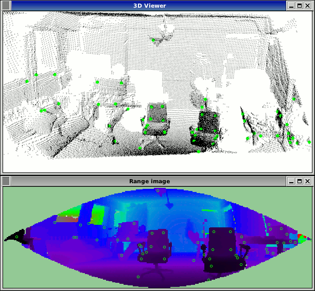

How to extract NARF keypoint from a range image
This tutorial demonstrates how to extract NARF key points from a range image. The executable enables us to load a point cloud from disc (or create it if not given), extract interest points on it and visualize the result, both in an image and a 3D viewer.
The code
First, create a file called, let’s say, narf_keypoint_extraction.cpp in your favorite
editor, and place the following code inside it:
1 2 3 4 5 6 7 8 9 10 11 12 13 14 15 16 17 18 19 20 21 22 23 24 25 26 27 28 29 30 31 32 33 34 35 36 37 38 39 40 41 42 43 44 45 46 47 48 49 50 51 52 53 54 55 56 57 58 59 60 61 62 63 64 65 66 67 68 69 70 71 72 73 74 75 76 77 78 79 80 81 82 83 84 85 86 87 88 89 90 91 92 93 94 95 96 97 98 99 100 101 102 103 104 105 106 107 108 109 110 111 112 113 114 115 116 117 118 119 120 121 122 123 124 125 126 127 128 129 130 131 132 133 134 135 136 137 138 139 140 141 142 143 144 145 146 147 148 149 150 151 152 153 154 155 156 157 158 159 160 161 162 163 164 165 166 167 168 169 170 171 172 173 174 175 176 177 178 179 180 181 182 183 184 185 186 187 188 189 190 191 192 193 194 195 196 197 198 199 200 | /* \author Bastian Steder */
#include <iostream>
#include <pcl/range_image/range_image.h>
#include <pcl/io/pcd_io.h>
#include <pcl/visualization/range_image_visualizer.h>
#include <pcl/visualization/pcl_visualizer.h>
#include <pcl/features/range_image_border_extractor.h>
#include <pcl/keypoints/narf_keypoint.h>
#include <pcl/console/parse.h>
typedef pcl::PointXYZ PointType;
// --------------------
// -----Parameters-----
// --------------------
float angular_resolution = 0.5f;
float support_size = 0.2f;
pcl::RangeImage::CoordinateFrame coordinate_frame = pcl::RangeImage::CAMERA_FRAME;
bool setUnseenToMaxRange = false;
// --------------
// -----Help-----
// --------------
void
printUsage (const char* progName)
{
std::cout << "\n\nUsage: "<<progName<<" [options] <scene.pcd>\n\n"
<< "Options:\n"
<< "-------------------------------------------\n"
<< "-r <float> angular resolution in degrees (default "<<angular_resolution<<")\n"
<< "-c <int> coordinate frame (default "<< (int)coordinate_frame<<")\n"
<< "-m Treat all unseen points as maximum range readings\n"
<< "-s <float> support size for the interest points (diameter of the used sphere - "
<< "default "<<support_size<<")\n"
<< "-h this help\n"
<< "\n\n";
}
//void
//setViewerPose (pcl::visualization::PCLVisualizer& viewer, const Eigen::Affine3f& viewer_pose)
//{
//Eigen::Vector3f pos_vector = viewer_pose * Eigen::Vector3f (0, 0, 0);
//Eigen::Vector3f look_at_vector = viewer_pose.rotation () * Eigen::Vector3f (0, 0, 1) + pos_vector;
//Eigen::Vector3f up_vector = viewer_pose.rotation () * Eigen::Vector3f (0, -1, 0);
//viewer.setCameraPosition (pos_vector[0], pos_vector[1], pos_vector[2],
//look_at_vector[0], look_at_vector[1], look_at_vector[2],
//up_vector[0], up_vector[1], up_vector[2]);
//}
// --------------
// -----Main-----
// --------------
int
main (int argc, char** argv)
{
// --------------------------------------
// -----Parse Command Line Arguments-----
// --------------------------------------
if (pcl::console::find_argument (argc, argv, "-h") >= 0)
{
printUsage (argv[0]);
return 0;
}
if (pcl::console::find_argument (argc, argv, "-m") >= 0)
{
setUnseenToMaxRange = true;
std::cout << "Setting unseen values in range image to maximum range readings.\n";
}
int tmp_coordinate_frame;
if (pcl::console::parse (argc, argv, "-c", tmp_coordinate_frame) >= 0)
{
coordinate_frame = pcl::RangeImage::CoordinateFrame (tmp_coordinate_frame);
std::cout << "Using coordinate frame "<< (int)coordinate_frame<<".\n";
}
if (pcl::console::parse (argc, argv, "-s", support_size) >= 0)
std::cout << "Setting support size to "<<support_size<<".\n";
if (pcl::console::parse (argc, argv, "-r", angular_resolution) >= 0)
std::cout << "Setting angular resolution to "<<angular_resolution<<"deg.\n";
angular_resolution = pcl::deg2rad (angular_resolution);
// ------------------------------------------------------------------
// -----Read pcd file or create example point cloud if not given-----
// ------------------------------------------------------------------
pcl::PointCloud<PointType>::Ptr point_cloud_ptr (new pcl::PointCloud<PointType>);
pcl::PointCloud<PointType>& point_cloud = *point_cloud_ptr;
pcl::PointCloud<pcl::PointWithViewpoint> far_ranges;
Eigen::Affine3f scene_sensor_pose (Eigen::Affine3f::Identity ());
std::vector<int> pcd_filename_indices = pcl::console::parse_file_extension_argument (argc, argv, "pcd");
if (!pcd_filename_indices.empty ())
{
std::string filename = argv[pcd_filename_indices[0]];
if (pcl::io::loadPCDFile (filename, point_cloud) == -1)
{
std::cerr << "Was not able to open file \""<<filename<<"\".\n";
printUsage (argv[0]);
return 0;
}
scene_sensor_pose = Eigen::Affine3f (Eigen::Translation3f (point_cloud.sensor_origin_[0],
point_cloud.sensor_origin_[1],
point_cloud.sensor_origin_[2])) *
Eigen::Affine3f (point_cloud.sensor_orientation_);
std::string far_ranges_filename = pcl::getFilenameWithoutExtension (filename)+"_far_ranges.pcd";
if (pcl::io::loadPCDFile (far_ranges_filename.c_str (), far_ranges) == -1)
std::cout << "Far ranges file \""<<far_ranges_filename<<"\" does not exists.\n";
}
else
{
setUnseenToMaxRange = true;
std::cout << "\nNo *.pcd file given => Generating example point cloud.\n\n";
for (float x=-0.5f; x<=0.5f; x+=0.01f)
{
for (float y=-0.5f; y<=0.5f; y+=0.01f)
{
PointType point; point.x = x; point.y = y; point.z = 2.0f - y;
point_cloud.points.push_back (point);
}
}
point_cloud.width = (int) point_cloud.points.size (); point_cloud.height = 1;
}
// -----------------------------------------------
// -----Create RangeImage from the PointCloud-----
// -----------------------------------------------
float noise_level = 0.0;
float min_range = 0.0f;
int border_size = 1;
pcl::RangeImage::Ptr range_image_ptr (new pcl::RangeImage);
pcl::RangeImage& range_image = *range_image_ptr;
range_image.createFromPointCloud (point_cloud, angular_resolution, pcl::deg2rad (360.0f), pcl::deg2rad (180.0f),
scene_sensor_pose, coordinate_frame, noise_level, min_range, border_size);
range_image.integrateFarRanges (far_ranges);
if (setUnseenToMaxRange)
range_image.setUnseenToMaxRange ();
// --------------------------------------------
// -----Open 3D viewer and add point cloud-----
// --------------------------------------------
pcl::visualization::PCLVisualizer viewer ("3D Viewer");
viewer.setBackgroundColor (1, 1, 1);
pcl::visualization::PointCloudColorHandlerCustom<pcl::PointWithRange> range_image_color_handler (range_image_ptr, 0, 0, 0);
viewer.addPointCloud (range_image_ptr, range_image_color_handler, "range image");
viewer.setPointCloudRenderingProperties (pcl::visualization::PCL_VISUALIZER_POINT_SIZE, 1, "range image");
//viewer.addCoordinateSystem (1.0f, "global");
//PointCloudColorHandlerCustom<PointType> point_cloud_color_handler (point_cloud_ptr, 150, 150, 150);
//viewer.addPointCloud (point_cloud_ptr, point_cloud_color_handler, "original point cloud");
viewer.initCameraParameters ();
//setViewerPose (viewer, range_image.getTransformationToWorldSystem ());
// --------------------------
// -----Show range image-----
// --------------------------
pcl::visualization::RangeImageVisualizer range_image_widget ("Range image");
range_image_widget.showRangeImage (range_image);
// --------------------------------
// -----Extract NARF keypoints-----
// --------------------------------
pcl::RangeImageBorderExtractor range_image_border_extractor;
pcl::NarfKeypoint narf_keypoint_detector (&range_image_border_extractor);
narf_keypoint_detector.setRangeImage (&range_image);
narf_keypoint_detector.getParameters ().support_size = support_size;
//narf_keypoint_detector.getParameters ().add_points_on_straight_edges = true;
//narf_keypoint_detector.getParameters ().distance_for_additional_points = 0.5;
pcl::PointCloud<int> keypoint_indices;
narf_keypoint_detector.compute (keypoint_indices);
std::cout << "Found "<<keypoint_indices.points.size ()<<" key points.\n";
// ----------------------------------------------
// -----Show keypoints in range image widget-----
// ----------------------------------------------
//for (std::size_t i=0; i<keypoint_indices.points.size (); ++i)
//range_image_widget.markPoint (keypoint_indices.points[i]%range_image.width,
//keypoint_indices.points[i]/range_image.width);
// -------------------------------------
// -----Show keypoints in 3D viewer-----
// -------------------------------------
pcl::PointCloud<pcl::PointXYZ>::Ptr keypoints_ptr (new pcl::PointCloud<pcl::PointXYZ>);
pcl::PointCloud<pcl::PointXYZ>& keypoints = *keypoints_ptr;
keypoints.points.resize (keypoint_indices.points.size ());
for (std::size_t i=0; i<keypoint_indices.points.size (); ++i)
keypoints.points[i].getVector3fMap () = range_image.points[keypoint_indices.points[i]].getVector3fMap ();
pcl::visualization::PointCloudColorHandlerCustom<pcl::PointXYZ> keypoints_color_handler (keypoints_ptr, 0, 255, 0);
viewer.addPointCloud<pcl::PointXYZ> (keypoints_ptr, keypoints_color_handler, "keypoints");
viewer.setPointCloudRenderingProperties (pcl::visualization::PCL_VISUALIZER_POINT_SIZE, 7, "keypoints");
//--------------------
// -----Main loop-----
//--------------------
while (!viewer.wasStopped ())
{
range_image_widget.spinOnce (); // process GUI events
viewer.spinOnce ();
pcl_sleep(0.01);
}
}
|
Explanation
In the beginning we do command line parsing, read a point cloud from disc (or create it if not provided), create a range image and visualize it. All of these steps are already covered in the previous tutorial Range image visualization .
The interesting part begins here:
...
pcl::RangeImageBorderExtractor range_image_border_extractor;
pcl::NarfKeypoint narf_keypoint_detector (&range_image_border_extractor);
narf_keypoint_detector.setRangeImage (&range_image);
narf_keypoint_detector.getParameters ().support_size = support_size;
//narf_keypoint_detector.getParameters ().add_points_on_straight_edges = true;
//narf_keypoint_detector.getParameters ().distance_for_additional_points = 0.5;
pcl::PointCloud<int> keypoint_indices;
narf_keypoint_detector.compute (keypoint_indices);
std::cout << "Found "<<keypoint_indices.points.size ()<<" key points.\n";
...
This creates a RangeImageBorderExtractor object, that is needed for the interest point extraction. If you are interested in this you can have a look at the Range Image Border Extraction tutorial. In this case we just use the RangeImageBorderExtractor object with its default parameters. Then we create the NarfKeypoint object, give it the RangeImageBorderExtractor object, the range image and set the support size (the size of the sphere around a point that includes points that are used for the determination of the interest value). The commented out part contains some parameters that you can test out if you want. Next we create the object where the indices of the determined keypoints will be saved and compute them. In the last step we output the number of found keypoints.
The remaining code just visualizes the results in a range image widget and also in a 3D viewer.
Compiling and running the program
Add the following lines to your CMakeLists.txt file:
1 2 3 4 5 6 7 8 9 10 11 12 | cmake_minimum_required(VERSION 2.6 FATAL_ERROR)
project(narf_keypoint_extraction)
find_package(PCL 1.3 REQUIRED)
include_directories(${PCL_INCLUDE_DIRS})
link_directories(${PCL_LIBRARY_DIRS})
add_definitions(${PCL_DEFINITIONS})
add_executable (narf_keypoint_extraction narf_keypoint_extraction.cpp)
target_link_libraries (narf_keypoint_extraction ${PCL_LIBRARIES})
|
After you have made the executable, you can run it. Simply do:
$ ./narf_keypoint_extraction -m
This will use an autogenerated point cloud of a rectangle floating in space. The key points are detected in the corners. The parameter -m is necessary, since the area around the rectangle is unseen and therefore the system can not detect it as a border. The option -m changes the unseen area to maximum range readings, thereby enabling the system to use these borders.
You can also try it with a point cloud file from your hard drive:
$ ./narf_keypoint_extraction <point_cloud.pcd>
The output should look similar to this:
